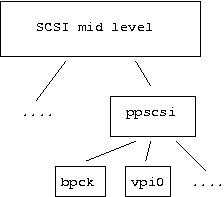

SCSI can be viewed as a command set and a set of hardware buses that convey that command set. Those hardware buses can be further divided into those used exclusively for SCSI (e.g. ultra wide), those shared with other protocols (e.g. USB, IEEE 1394) and those buses not defined by the various SCSI standards. In the final category there are several interesting examples including ATAPI CD writers and PC parallel bus ZIP drives. Such devices use the SCSI command set (or something very close to it) over a foreign bus.
This section briefly outlines various pseudo lower level drivers which essentially communicate with other Linux subsystems in order to send the SCSI command set to devices controlled by those other subsystems. This raises some ownership issues that often confuse users and result in many questions to the maintainers.
IDE-SCSI. From configuration point of view, ide-scsi will grab and try to control every ATA (a.k.a. IDE) device which doesn't have a "native" driver attached (such as ide-cd, ide-tape, etc). So for example, if both ide-cd and ide-scsi are compiled into the kernel in a system which has an ATAPI cdrom, ide-cd will get to control it. If only ide-scsi is compiled in, it will get the device. There are some kernel boot time parameters to control which driver gets which device.
The preferences of the IDE subsystem can be overridden with one of these kernel boot time parameters (of which the first is most interesting for this subsystem):
hdx=ide-scsi
hdx=ide-cdrom
hdx=ide-floppy
When the driver is running, the device will be accessible using the SCSI device (/dev/sda, /dev/sr0 , etc), and not through the corresponding /dev/hdx device. Still, the /dev/hdx device will be available, but only for configuration.
All the generic IDE configuration parameters (DMA on/off, 32-bit I/O, unmasking irq's, etc) are available by using the /dev/hdx device, for example to enable DMA:
hdparm -d1 /dev/hdx |
bios_cyl
bios_head
bios_sect
transform
log
bit 0: Enable(1)/Disable(0) transformation for commands not originated from the sg driver.
bit 1: Enable/Disable transformation for commands issued using the sg driver.
echo "log:1" > /proc/ide/hdx/settings |
echo "using_dma:0" > /proc/ide/hdx/settings |
PPA + IMM. Iomega ZIP drives come in a variety of flavours including parallel port, SCSI, and ATAPI. The parallel port versions (both old and new) are driven by ppa and imm respectively.
The parallel port ZIP drives are actually SCSI devices which tunnel SCSI commands over the parallel port using interfaces called VPI0 (older-style) and VPI2 (newer-style). The ppa driver is the VPI0 host implementation and the imm driver is the VPI2 host implementation.
The way it works is that the HBA is a chip inside the ZIP drive, so that the host adapter and the peripheral are in the same actual case.
PPSCSI. The new, not-yet-integrated, architecture for devices that use SCSI over a parallel port cable is ppscsi. The ppscsi module provides the boiler plate code and makes it easy to write implementations for different interfaces.
Each ppscsi protocol module registers itself with the ppscsi module, passing in a list of entry points for the various things that are common to all protocol drivers.

The structure of the PPSCSI drivers.
The plan is that the ppscsi architecture will absorb both the ppa and imm drivers and protocol modules; only vpi0 has been written so far. See www.torque.net/parport/ppscsi.html.
USB. USB classifies a group of devices as "mass storage" (e.g. disks) and interacts with these using the SCSI command set. The module name is "usb-storage". See www.one-eyed-alien.net/~mdharm/linux-usb.
There is also the usb/microtek driver for controlling X6 USB scanners from Microtek. When configured, the SANE application uses the sg driver to send SCSI commands over USB to control this scanner.
I2O. See kernel source file /usr/src/linux/drivers/i2o/io2_scsi.c .
IEEE 1394. Support for IEEE 1394 devices that use the SBP-2 protocol is now available (lk 2.4.7). See the IEEE 1394 paragraph in this section for more information.
iSCSI. An IETF draft is taking shape for iSCSI. This sends the SCSI command set over a TCP network connection. iSCSI seems to be gaining popularity quickly and there are several implementations for Linux taking shape. One implementation is at sourceforge.net/projects/intel-iscsi/. Use your favourite search engine to find other projects.
| [1] | It has been reported that in some distributions the attempt to use the hdparm command fails. In this case use the "echo ... > /proc/ide/hdx/settings" form. |